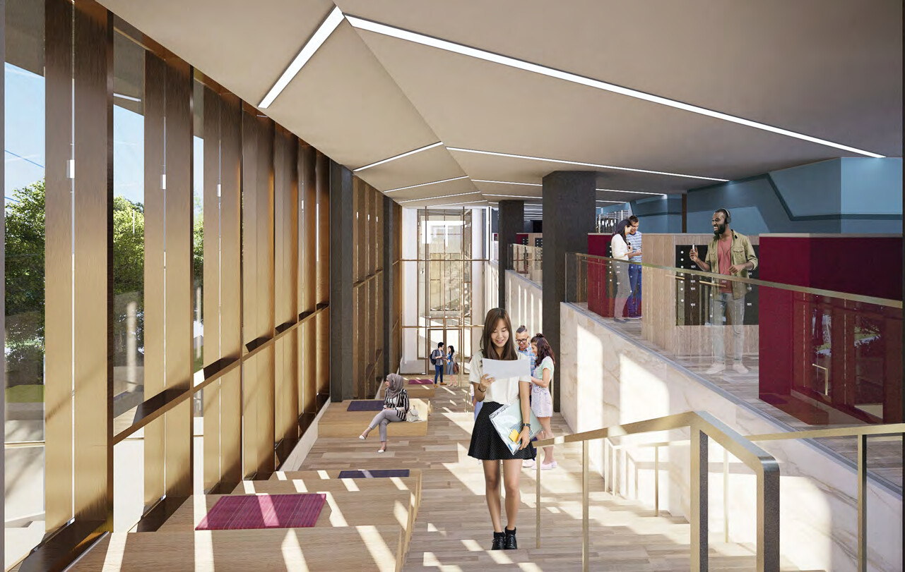
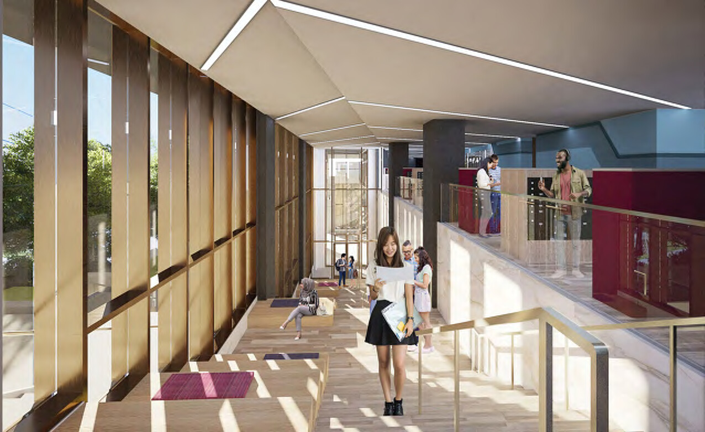
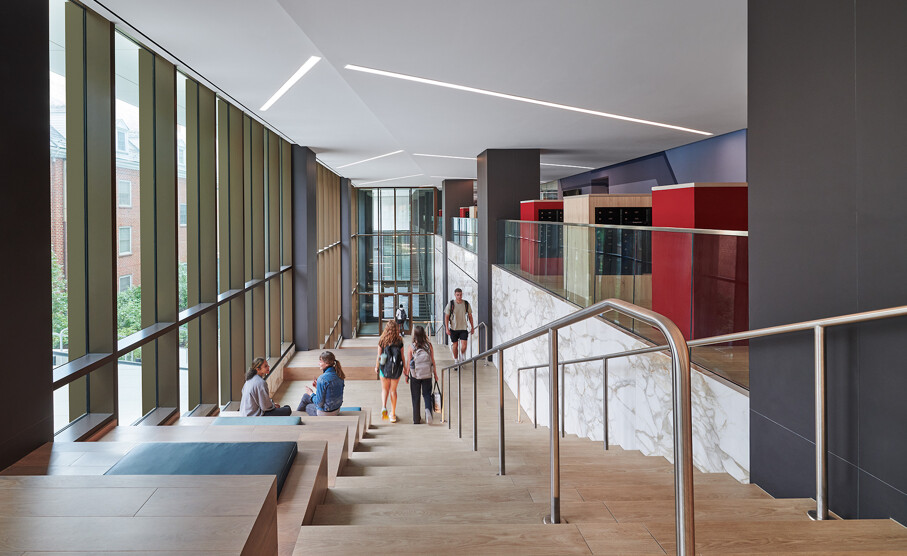
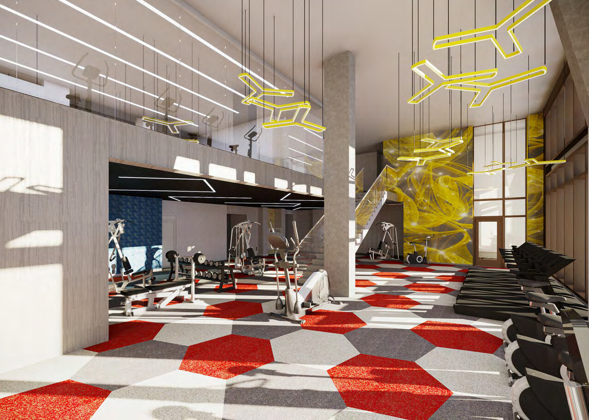
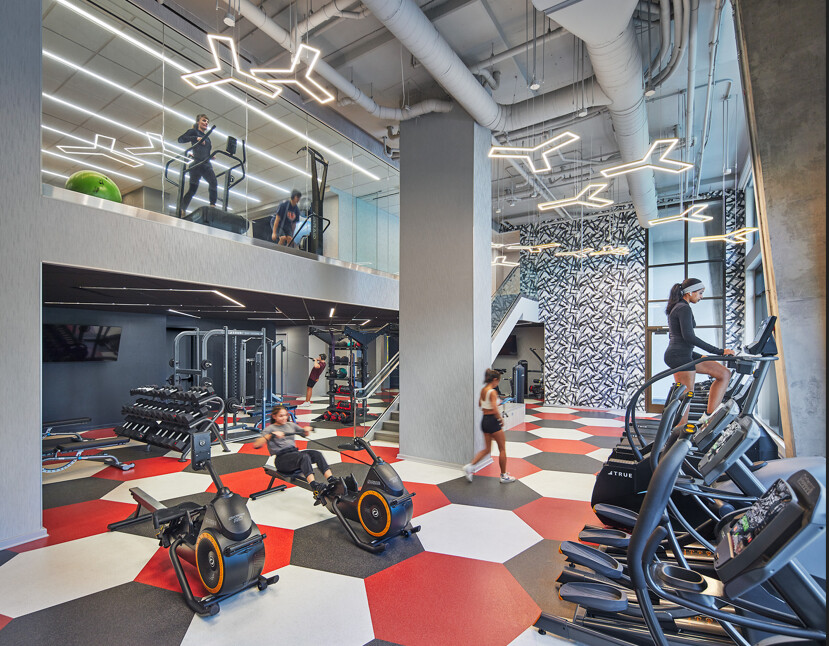

Union on Knox is located at the southeast corner of the University of Maryland (UMD), and will serve as a new pedestrian gateway for the University. At the west end of Lehigh Road, the existing parking lot will be replaced by a new monumental stair connected to the existing University pedestrian path, and a new plaza will be built adjacent to the Level 2 residential lobby entrance.
The total residential area is approximately 359,000-sf with 340 apartments comprised of various sized unit types. The Level 2 residential common area features lobby seating, a mail area, leasing office, business center, and a small open lounge opening to a 4,000-sf outdoor patio.
The amenity area provides additional 8,500-sf space for fitness center, twitch room, gaming lounge, catering kitchen, and pet grooming area. Other residential amenities include a 350-sf collaboration study lounge at each typical floor.



